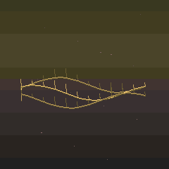
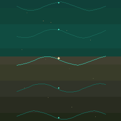
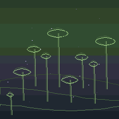

Aurora Polaris

M-VAVE FM-1 Version 2.1
Six voices, living patterns and places to get lost in. Play a Biome, shape its movement, or follow a self-playing dream. Free, open-source sound worlds for your FM-1.
New here? Follow the illustrated tour · No hardware needed to try.

Fourteen self-playing dreams for the FM-1. Each moves through four chapters, with Biomes that share motifs, dissolve into new harmonies and carry sound across the transitions.



Interactive walkthrough
Pick a step to see the screen and follow along on the FM-1 or in the browser.
Download the illustrated 2.1 guide (PDF) → · Troubleshooting →

A Biome holds the sounds, patterns, effects and modulation for the whole instrument.

Two tracks with different pattern lengths can fall in and out of sync as they play.

Use Living Links to let a hit move another voice. Biome Drift moves between two captured settings.
For hands-on control, MIDI Learn maps a knob or fader to a target. See page 5 of the PDF for a first mapping.

Journey joins up to eight sections. An anchored voice can carry its sound and pattern across a transition.
The other 269 factory Biomes, including Blank, start with Journey Off. Off retains the sections.

Connect the FM-1 by USB and choose it as your audio input at 44.1 kHz.
Three factory Journeys
Rendered from the 2.0 engine. Each clip includes a complete loop and its return.
A low bass connects a vowel choir, cello and felt.
Felt and cedar give way to hand percussion over the same bass motif.
Kick and sub hold a dub groove as the upper voices change.
Mutable Dreams 2.1
Hear Silva Nocturna, Mare Nebularum and Terra Pluvia with the original device display and USB audio.
Watch on YouTube → Watch the Short → Follow Mutable Dreams on Instagram →VIBE FM · 0.18 Preview
Play Mutable Dreams with 16 expressive pads, loop your gestures and explore 271 Biomes on a full-size Stage. In your DAW, open the Dream Console and automate the instrument.
Play in your browser. Download the WASM file and drop it into The Firmware Hub’s VIBE FM Playground. Then press PLAY.
Play in your DAW. Install Sven Trogus’s VIBE FM host from The Firmware Hub. Open the plug-in and choose Add firmware to load the Performance Garden ZIP. The preview was tested in the Playground and in anyDAW using the Audio Unit.
Firmware & tools
Mutable Dreams 2.1 is built for the M-VAVE FM-1.
Hardware coverage. Build 2467CC38 was tested on an FM-1 via USB-MIDI in both directions with Mutable Dreams 2.0 and with M-VAVE stock V15. The saved banks and live Biome matched their backups byte for byte after the V15 recovery. Mare Nebularum completed a scene transition in a two-minute test with eight USB audio channels and screen mirroring, with zero measured dropouts. A physical four-hour run, a separate stock V16 round trip and validation on UC25HQ80 (B36014) remain open for this exact build.
Before an update, export your saved banks as .mddb and export an edited live Biome separately. Use desktop Chrome or Edge for the USB installer and editor.
On the workbench
The same musical curiosity is growing into other instruments. These projects are in development; the available FM-1 release is 2.1.
Botanical track views and a pad-led garden, designed around a larger performance surface.
A pocket sound garden with its own landscape, growing plants and hands-on sound exploration.
A separate port for the SMK-37 Elite. The Pro will follow with its own hardware tests and installer.